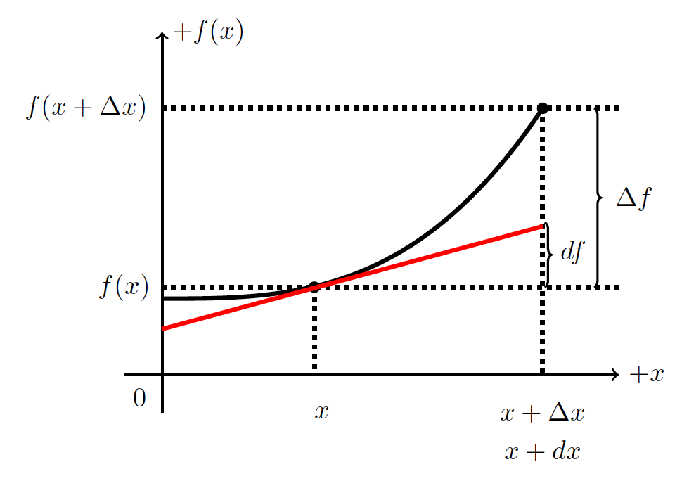

D1.2 Kinematics - Differential Form#
D1.2.1 Motivation#
We probably already know that Newton’s second law in fact is a second-order differential equation. As we progress further into the abyss of physics we start to realize that differentials start to play a more significant role, and physics starts to be described through differential calculus and differential geometry. So, let us take a quick review of the differential in 1D.
D1.2.2 Difference vs. Differential#
We define the gab on the x-axis between two data data points as \(\Delta x\). For example, we can say that \(\Delta x = x_2 - x_1\). Similarly, the gab between to data points on the y-axis is \(\Delta y = y_2 - y_1\). We call these gabs for differences and use the symbol \(\Delta\) to denote a difference: read as “a difference in _____”.
In all pratical applications, the difference is a number. It can be a small number, it can be a large number, there is no restrictions on it (unless you are dividing by it, then it can’t be zero of course).
Since differences are associated with numbers, we can create the ratio of differences (provided the denominator is not zero). For example the ratio between the differences in some dependent function \(f\) and its independent variable \(x\) is what we traditionally call the slope:
The differential is very similar to the difference, but in some sense we can say that it is the connection between algebra and calculus in terms of change. We will consider a small change in x. We will avoid what we mean by small for now, but understand that it is in fact a number and give it the symbol \(dx\).
While \(dx\) is considered a number, it is more of a mathematical concept as its meaning is truly a small number, in fact, so small that we will later let it approach zero, but then again…in math, what is a small number?
What implications does it have for \(df\) vs. \(\Delta f\)? Let us find out. Let us use a figure to investigate properties of \(dx\) and let us just say that \(dx = \Delta x\).
The red line in the figure is the tangent line to the point \([x, f(x)]\) and is a straight line described by (remember how to write the equation of a straight line by using rise = slope times run?)
Since we know the slope, \(a\), is the derivative, and we want to use grown-up notation \(y \rightarrow f\) and consider small differences (aka differentials), we write Equation (1) as
Here, \(df\) is the rise of the red, straight line and \(dx\) is its run. We have used the derivative \(\frac{df}{dx}\) as the slope of the red line. We keep in mind, that this must be the slope evalutated at the point x.
We notice from the figure that \(df \neq \Delta f\).
We use the term differential for \(df\) and the term difference for \(\Delta f\). Only when \(dx\) approaches zero is \(\Delta f = df\). Key point: both \(dx\) and \(df\) can be assigned values and we can create the ratio (provided \(dx \neq 0\)):
which we can manipulate just like other ratios.
NOTE: although this ratio looks like the derivative, it is not! The derivative is not a ratio, but an operator, which should be read as “derivative of \(f\) with respect to \(x\)”. We could write the derivative better as
to clearly distinguish it from the ratio of differentials.
We often write the derivative as \(\frac{df}{dx}\) and the ratio of differentials as \(\frac{df}{dx}\) , and we must use the context of the problem/situation to find out if we are talking about one or the other. One is an operator while the other is simply a ratio between numbers (small numbers). This confusion disappears if we use the Lagrange notation for the derivative.
To find the differential of a function, we can use the above as a definition. To avoid the confusion between ratio of differentials and the derivative, it may be more suitable to utilize the Lagrange notation:
The differential of a function \(f\) with respect to its independent variable \(x\) is:
The area of a circle is \(A(r) = \pi r^2\). If we change the radius by a small amount \(dr\), by how much will the area change?
Show code cell source
import sympy as sym
r = sym.Symbol('r')
A = sym.pi*r**2
# dA = A'*dr
A_prime = sym.diff(A,r,1)
print('The area will change by: dA = '+str(A_prime)+'dr')
Show code cell output
The area will change by: dA = 2*pi*rdr
D1.2.3 Velocity#
We can define the instantaneous velocity in terms of a differential equation through the position and time differentials
If we consider differences instead, then the velocity must be constant across the time interval (or consider the average velocity), and the above expression becomes a well-known kinematics equation from University Physics I:
D1.2.4 Acceleration#
Similarly, we define the instantaneous acceleration as
D1.2.5 Applications#
We will utilize the differentials quite a bit in this course. For example, when we explore variable mass problems it is often convenient to solve the problems in differential form. Another example is how we obtain vectors under coordinate transformations. In the next section, we will see how we progress from the differential equations to the integral equations and you will realize you have been using differentials all along. The most infamous example is the “u substitution” used to integrate composite functions.